Cada capítulo corresponde a un módulo del sistema. Empieza con una explicación corta, una imagen real de la pantalla y los pasos para usarlo. Después vienen todas sus funciones numeradas, una por una, con lo que hace cada una. En total son 228 funciones.
Quién ve qué
Cada persona entra con su usuario y el menú le muestra solo lo que su rol permite.
Administradora
Todo el sistema: ventas, finanzas, finanzas del hogar, dashboard, usuarios, auditoría y configuración. Es la única que anula facturas.
Secretaria
Panel, salón de ventas, catálogo, cotizaciones, facturas, cartera, clientes, secretaría, mensajes, productos, inventario y producción.
Vendedor de salón
Panel, salón de ventas, catálogo, cotizaciones, clientes, productos y mensajes.
Jefe de taller
Panel, producción, inventario y telas, compras, catálogo, productos y personal.
Capítulo 01
Primeros pasos y seguridad
Aurea Atelier es un sistema privado. Nadie entra sin usuario y contraseña, cada persona ve solo lo que le corresponde y todo queda registrado. Este capítulo explica cómo entrar, cómo proteger la información y cómo crear los usuarios del equipo.
Pantalla de ingreso privada
Cómo se usa
Abra el sistema y escriba su usuario y contraseña. La primera vez use la clave de administradora que se entrega con el sistema.
Vaya a Usuarios y roles y cambie las contraseñas iniciales por unas propias.
Cree un usuario para la secretaria, para los vendedores del salón y para el jefe de taller, cada uno con su rol.
Cuando se levante del computador, toque el candado de arriba para bloquear la pantalla.
Si hay clientes cerca, toque el ojo para ocultar todos los valores en pesos.
Pantalla bloqueadaModo privado: los valores quedan ocultosUsuarios y roles
Funciones de este módulo
18 funciones
1
Ingreso con usuario y contraseña
Cada persona entra con su propio usuario; sin clave no se ve ninguna pantalla del sistema.
2
Contraseñas cifradas con PBKDF2-SHA256 (120.000 iteraciones)
Las claves nunca se guardan tal cual: se transforman con un cifrado bancario que no se puede revertir.
3
Bloqueo tras 5 intentos fallidos
Si alguien intenta adivinar la clave, el ingreso se bloquea un minuto después del quinto error.
4
Bloqueo automático por inactividad
Si nadie toca el sistema durante los minutos configurados, la pantalla se bloquea sola.
5
Botón de bloqueo inmediato de pantalla
El candado de la barra superior bloquea la pantalla al instante; para volver se pide la clave.
6
Modo privado que oculta todos los valores
El botón del ojo difumina todos los montos para que nadie alrededor vea cifras.
7
Roles: administradora, secretaria, vendedor, jefe de taller
Cuatro perfiles con permisos distintos según el trabajo de cada persona.
8
Menú filtrado según el rol
Cada usuario solo ve en el menú los módulos que su rol le permite abrir.
9
Solo la administradora anula facturas
La anulación de una factura queda reservada a la dueña para evitar errores o abusos.
10
Política de contraseñas seguras
Las claves nuevas deben tener mínimo 8 caracteres con mayúscula, minúscula y número.
11
Aviso para cambiar claves iniciales
Los usuarios con clave de fábrica aparecen marcados hasta que la cambien.
12
Activar y desactivar usuarios
Cuando alguien deja de trabajar, se desactiva su usuario sin borrar su historial.
13
Registro de auditoría de cada acción
Se guarda quién hizo qué y cuándo: ventas, abonos, cambios de precio, anulaciones y más.
14
Registro de intentos de ingreso fallidos
Los intentos de entrar con clave equivocada quedan anotados y resaltados en rojo.
15
Respaldo cifrado AES-256 con contraseña
Toda la información se puede guardar en un archivo protegido con contraseña.
16
Restauración de respaldo
Con el archivo de respaldo y su contraseña se recupera toda la información en otro equipo.
17
Página oculta de buscadores (noindex)
Google y otros buscadores no muestran el sistema en sus resultados.
18
Sesión que se cierra al cerrar el navegador
Al cerrar el navegador se cierra la sesión y hay que volver a ingresar.
Capítulo 02
Panel principal
Es lo primero que se ve al entrar: el estado completo del negocio en una sola pantalla. Muestra cuánto se vendió, cuánto le deben, qué hay en el taller y qué necesita atención hoy.
El panel al ingresar
Cómo se usa
Revise las cuatro tarjetas de arriba: ventas de hoy, ventas del mes, cartera y telas.
Mire la agenda del día para saber qué citas y entregas hay.
Atienda las alertas: telas, prendas o insumos por debajo del mínimo.
Use los botones de arriba para vender en el salón o crear una cotización.
El panel en el celular
Funciones de este módulo
14 funciones
19
Ventas de hoy
Suma de todas las facturas emitidas hoy, con IVA.
20
Recaudo del día
Lo que realmente entró hoy en efectivo, transferencias y abonos.
21
Ventas del mes y comparación con el mes anterior
Total del mes con una flecha que indica si va por encima o por debajo del mes pasado.
22
Cartera por cobrar y vencida
Cuánto deben los clientes en total y cuánto de eso ya está vencido.
23
Metros de tela y valor en bodega
Metros de tela disponibles y lo que valen a precio de compra.
24
Gráfica de ventas de 12 meses
Barras con las ventas de cada mes del último año; al pasar el dedo muestra el valor.
25
Agenda del día
Las citas, pruebas, entregas y llamadas programadas para hoy, por hora.
26
Órdenes en el taller con avance
Las órdenes de producción abiertas con su etapa, barra de avance y días para la entrega.
27
Alertas de tela, stock e insumos
Avisos de lo que hay que reponer antes de que se acabe.
28
Mensajes sin responder
Los últimos mensajes de clientes que todavía no tienen respuesta.
29
Lo más vendido
Las prendas con más unidades vendidas en el historial.
30
Cartera por edad (al día, 30, 60, +60)
El saldo pendiente separado según cuántos días lleva vencido.
31
Saludo según la hora
Da los buenos días, tardes o noches con el nombre de quien ingresó.
32
Búsqueda global
La barra superior busca a la vez en clientes, facturas, cotizaciones, prendas y telas.
Capítulo 03
Salón de ventas
Es la caja del salón. Se toca la prenda, se elige la talla y el sistema calcula el precio correcto, el descuento y el IVA. Al cobrar sale la factura y se descuenta el inventario.
Venta en el mostrador
Cómo se usa
Busque la prenda por nombre o filtre por categoría.
Tóquela, elija la talla y la cantidad.
Elija el cliente: si es mayorista o empresa, el precio por mayor y su descuento se aplican solos.
Elija el medio de pago y toque Cobrar y facturar.
Envíe la factura por WhatsApp o imprímala.
Funciones de este módulo
14 funciones
33
Catálogo visual por categoría
Las prendas aparecen con su foto, precio al detal y precio por mayor.
34
Búsqueda de prendas por nombre o código
Escriba parte del nombre o el código para encontrar la prenda al instante.
35
Selección de talla y cantidad
Al tocar una prenda se elige la talla S, M, L o XL y cuántas unidades.
36
Precio mayorista automático por cantidad
Si la cantidad llega al mínimo de mayor, el precio cambia solo.
37
Precio mayorista automático por tipo de cliente
A los clientes mayoristas y empresas siempre se les cobra precio por mayor.
38
Descuento fijo del cliente
Si el cliente tiene un descuento pactado, se aplica al seleccionarlo.
39
Descuento manual
Se puede dar un descuento adicional en porcentaje hasta el 50%.
40
Cálculo de IVA
El IVA se calcula sobre el valor con descuento, con el porcentaje configurado.
Se registra cómo pagó el cliente para cuadrar la caja.
42
Venta a crédito con cartera
La venta a crédito queda en cartera con 30 días de plazo.
43
Aviso de falta de stock
Si se vende más de lo que hay en esa talla, el sistema avisa para programar producción.
44
Guardar venta como cotización
Lo que está en la venta se guarda como cotización para enviarla al cliente.
45
Factura inmediata al cobrar
Al cobrar se crea la factura con su número consecutivo.
46
Descuento automático del inventario por talla
Las unidades vendidas se restan del stock de esa talla.
Capítulo 04
Catálogo visual
Un catálogo elegante para mostrar las prendas en el celular o la tableta. Cada prenda tiene su ficha con fotos, tallas disponibles, precios y la tela; desde ahí se arma un pedido o una cotización.
Catálogo por colecciones
Cómo se usa
Entre a Catálogo y filtre por categoría o busque por color o colección.
Toque una prenda para abrir su ficha.
Para mostrarlo a un cliente active Vista para cliente: se ocultan costos y cantidades.
Elija talla y cantidad y toque Agregar al pedido; luego conviértalo en cotización.
Para subir la foto real, abra la ficha y toque Subir foto.
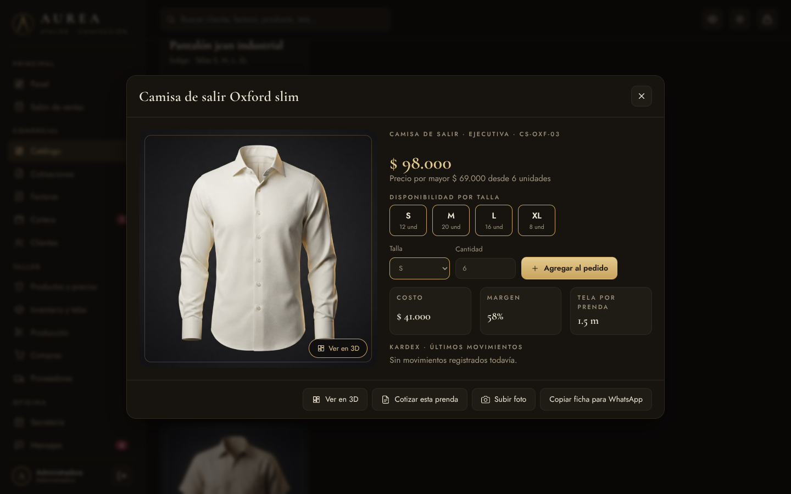
Ficha de una prendaVista para el clienteLista de precios
Funciones de este módulo
16 funciones
47
Catálogo por colecciones
Las prendas se agrupan en colecciones como Dotación, Ejecutiva, Resort o Bioseguridad.
48
Ilustración de cada prenda en su color
Una prenda nueva sin foto se muestra con un dibujo en su color hasta que se le suba una.
49
Fotos reales de las prendas desde el celular
Desde la ficha se toma o se elige una foto y queda guardada en la prenda.
50
Reducción automática del tamaño de la foto
La foto se ajusta para que no ocupe mucho espacio y cargue rápido.
51
Sellos de más vendido, últimas unidades y agotado
Cada tarjeta muestra su estado de un vistazo.
52
Filtro por categoría
Botones para ver solo camisas, pantalones, gorras, overoles, tapabocas o dotación médica.
53
Búsqueda por prenda, color o colección
La búsqueda encuentra por nombre, por color o por colección.
54
Orden por nombre, precio o disponibilidad
Se puede ordenar el catálogo como sea más útil.
55
Ficha de prenda con tallas disponibles
La ficha muestra cada talla con las unidades que hay.
56
Vista para cliente que oculta costos y stock
Con un botón se esconden costos, márgenes y cantidades para mostrar sin preocupación.
57
Pedido armado desde el catálogo
Se agregan varias prendas y tallas a un pedido mientras se recorre el catálogo.
58
Pedido convertido en cotización
El pedido se convierte en cotización con el precio correcto según el cliente.
59
Pedido enviado al salón de ventas
El pedido pasa directo a la caja para cobrarlo.
60
Ficha lista para enviar por WhatsApp
Copia el nombre, precios y tallas de la prenda para pegarlo en un chat.
61
Lista de precios detal y mayor
Una tabla con todas las prendas y sus precios al detal y por mayor.
62
Lista de precios exportable a Excel
La lista de precios se descarga para abrirla en Excel.
Capítulo 05
Probador 3D
Al elegir una prenda se puede ver en 3D: la prenda en relieve que gira, la tela real ondeando con la luz y una lupa para ver la costura. Ayuda a que el cliente entienda la calidad sin tener la prenda en la mano.
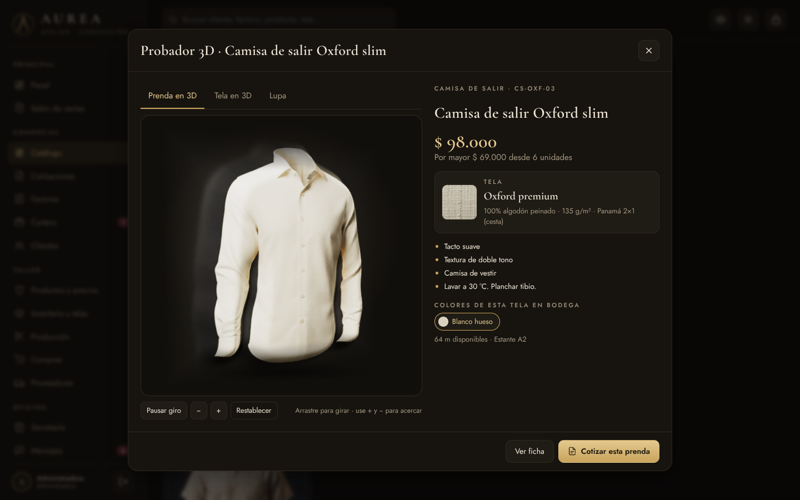
La prenda en relieve
Cómo se usa
Abra la ficha de una prenda en el catálogo y toque Ver en 3D, o hágalo al elegir la talla en el salón.
Arrastre con el dedo o el mouse para girar la prenda; use + y − para acercar.
Toque Tela en 3D para ver el tejido real y su caída.
Toque otro color de la lista para ver esa tela y cuántos metros hay en bodega.
Toque Lupa y pase el dedo por la foto para ver los detalles de cerca.
Toque Cotizar esta prenda para hacer la cotización desde ahí.
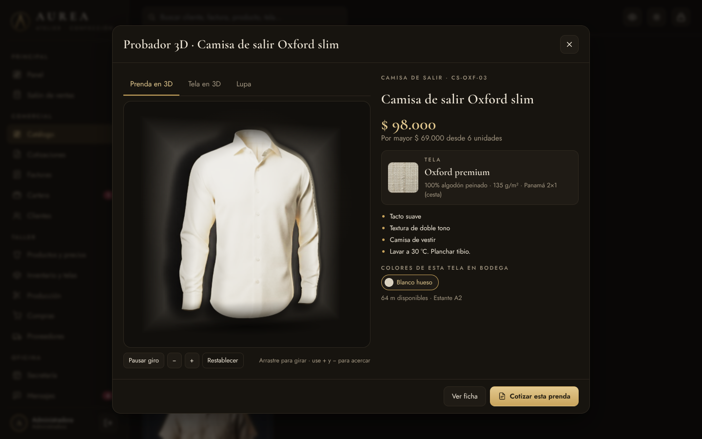
Girando la prenda con el dedo
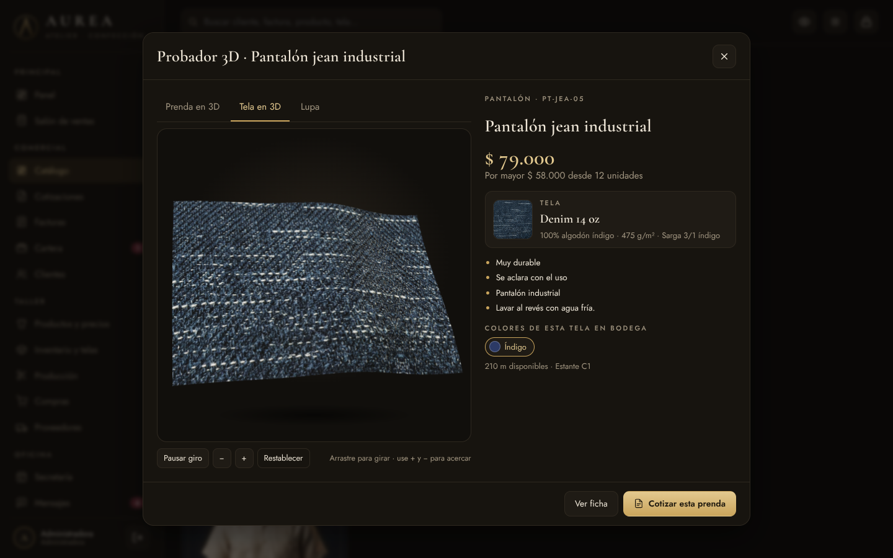
La tela real en movimiento
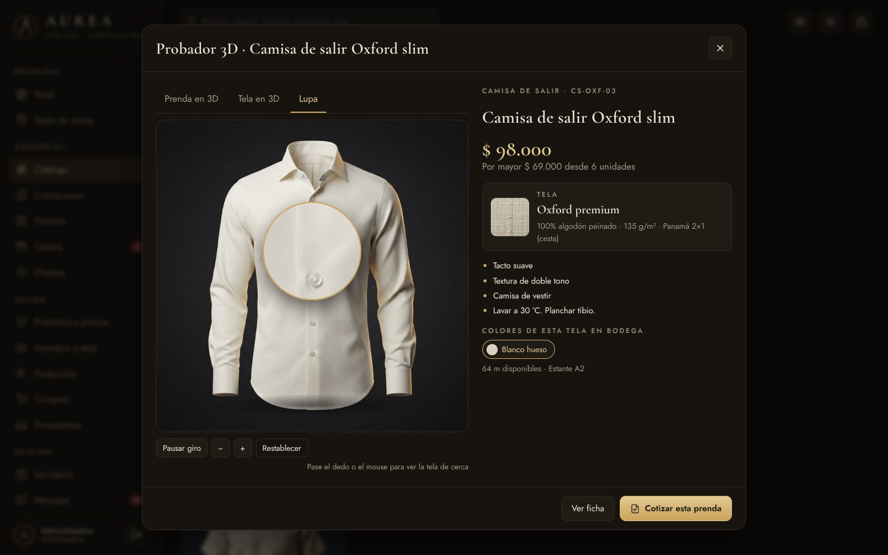
La lupa sobre la costura
Funciones de este módulo
12 funciones
63
Vista 3D de cada prenda con relieve
La foto de estudio se convierte en una pieza con volumen que se ve desde distintos ángulos.
64
Girar la prenda arrastrando con el dedo o el mouse
Se mueve la prenda hacia los lados y hacia arriba o abajo.
65
Giro automático de exhibición
Mientras nadie la toca, la prenda gira sola como en una vitrina.
66
Acercar y alejar la prenda
Los botones + y − o la rueda del mouse acercan la vista.
67
Luz que sigue el movimiento del dedo
La luz se mueve con el dedo y resalta pliegues y textura.
68
Tela en 3D con el tejido real de cada tipo
Se usa una foto macro real del drill, Oxford, lino, jean, gabardina o antifluido.
69
Tela en movimiento para ver la caída
La tela ondea suavemente para mostrar cómo cae y cómo refleja la luz.
70
Cambiar la tela a los colores que hay en bodega
Los colores disponibles de esa tela aparecen como botones para probarlos.
71
Metros disponibles y ubicación del color elegido
Al elegir un color se ve cuántos metros hay y en qué estante.
72
Ficha técnica: composición, gramaje, tejido y cuidado
Datos de la tela que el cliente suele preguntar, con instrucciones de lavado.
73
Lupa para ver de cerca la costura y la tela
Un círculo de aumento sigue el dedo sobre la foto de la prenda.
74
Vista con relieve en equipos sin 3D
Si el equipo no permite 3D, la foto se inclina con el dedo para dar sensación de volumen.
Capítulo 06
Cotizaciones
Las cotizaciones para empresas, colegios y mayoristas se arman en segundos. Cada una lleva su número, su vigencia y su estado, y con un clic se convierte en factura o en órdenes para el taller.
Lista de cotizaciones
Cómo se usa
Toque Nueva cotización y elija el cliente.
Agregue las líneas: prenda, talla, cantidad. El precio se pone solo y se puede cambiar.
Escriba las notas de bordado, colores o tiempos de entrega.
Guarde: el documento con logo aparece listo para enviar por WhatsApp.
Cuando el cliente apruebe, toque Facturar o Producir.
Armando una cotización
Funciones de este módulo
10 funciones
75
Crear y editar cotizaciones
Se crean desde cero, desde el catálogo o desde el salón, y se pueden corregir.
Espacio para los detalles que pide el cliente: logo, colores, tallas especiales.
80
Documento elegante con logo
La cotización sale con el membrete de lujo de la empresa.
81
Enviar por WhatsApp con mensaje listo
Abre WhatsApp con un mensaje cordial y el valor de la cotización.
82
Convertir en factura con un clic
La cotización aprobada se vuelve factura sin volver a escribir nada.
83
Generar órdenes de producción desde la cotización
Crea una orden para el taller por cada prenda de la cotización.
84
Totales por estado
Tarjetas arriba muestran cuánto hay en borrador, enviado, aprobado y rechazado.
Capítulo 07
La cotización con su sello
Cada cotización y factura sale con un membrete negro y dorado, el logo de la empresa y la foto de cada prenda. Incluye las condiciones comerciales, los datos bancarios y los espacios de firma, lista para enviar o imprimir.
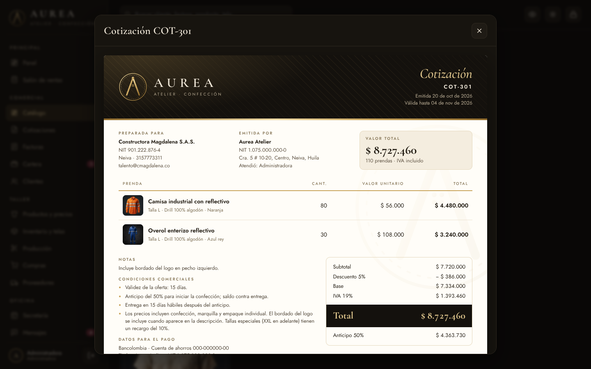
Cotización con membrete
Cómo se usa
Vaya a Configuración y llene la tarjeta Cotizaciones y facturas: banco, cuenta, anticipo, días de entrega y condiciones.
Cree una cotización o toque Cotizar esta prenda desde el catálogo o el probador 3D.
Revise el documento y envíelo por WhatsApp, o guárdelo en PDF desde el computador.
Condiciones, pago y firmas
Funciones de este módulo
9 funciones
85
Membrete negro y dorado con el logo
Encabezado de lujo con el logo, el número del documento y las fechas.
86
Foto de cada prenda dentro de la cotización
El cliente ve exactamente qué prenda está cotizando.
87
Tela y color de cada línea
Cada prenda indica su talla, la tela y el color.
88
Valor total y anticipo calculados
Muestra el total con IVA y el valor del anticipo según el porcentaje configurado.
89
Condiciones comerciales editables
Validez, anticipo, tiempo de entrega y condiciones propias de la empresa.
90
Datos bancarios para el pago
Banco, tipo de cuenta, número y titular para que el cliente consigne.
91
Firma de la empresa y aceptación del cliente
Dos espacios para firmar: el de la empresa y el de aprobación del cliente.
92
Cotizar una prenda desde el catálogo o el probador 3D
Un botón arma la cotización con la prenda que se está viendo.
93
Factura con el mismo membrete de lujo
Las facturas usan el mismo diseño, con pagado y saldo.
Capítulo 08
Facturas
Aquí están todas las facturas, de contado y a crédito, con su saldo y su estado. Se registran abonos, se anulan si hay un error y se envían al cliente.
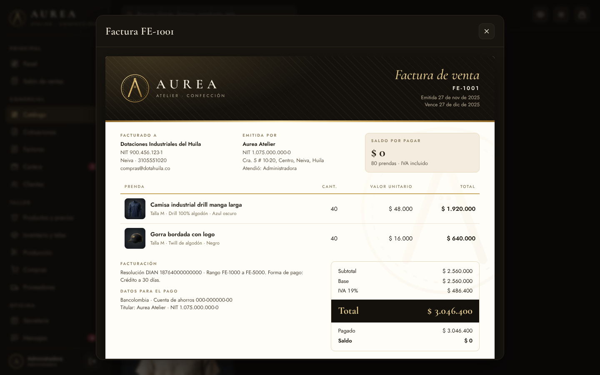
Factura con membrete
Cómo se usa
Toque Nueva factura o facture desde el salón o una cotización.
Para registrar un pago parcial toque Abonar y escriba el valor.
Para enviarla toque Ver y luego Enviar por WhatsApp.
Si hubo un error, la administradora puede anularla; las prendas vuelven al inventario.
Lista de facturas
Funciones de este módulo
10 funciones
94
Facturación de contado y a crédito
La factura de contado queda pagada; la de crédito pasa a cartera.
95
Plazos de 15, 30, 45, 60 y 90 días
Se elige el plazo y el sistema calcula la fecha de vencimiento.
96
Consecutivo y resolución configurables
Número de factura en orden y texto de la resolución de facturación.
97
Abonos parciales
El cliente puede pagar por partes; cada abono baja el saldo.
98
Historial de pagos
Cada factura guarda la fecha, el valor y el medio de cada pago.
99
Anulación con devolución al inventario
Al anular, las prendas vuelven a su talla en el inventario.
100
IVA generado del mes
Cuánto IVA se ha facturado en el mes, útil para la declaración.
101
Imprimir o guardar en PDF
Desde el computador la factura se imprime o se guarda como PDF.
102
Envío por WhatsApp
Abre WhatsApp con el número de factura, el total y el saldo.
103
Exportar a Excel
La lista de facturas se descarga para abrirla en Excel.
Capítulo 09
Cartera
La cartera muestra quién debe, cuánto y desde hace cuántos días. Cobrar se vuelve fácil: el botón Recordar abre WhatsApp con un mensaje de cobro amable ya escrito.
Cuentas por cobrar
Cómo se usa
Entre a Cartera y ordene por días para ver primero lo más vencido.
Toque Recordar para enviar el mensaje de cobro por WhatsApp.
Cuando el cliente pague, toque Abonar.
Funciones de este módulo
7 funciones
104
Cuentas por cobrar
Todas las facturas con saldo pendiente en una sola lista.
105
Días de vencimiento
Cuántos días lleva vencida cada factura o cuántos faltan para que venza.
106
Saldo por cliente
Una gráfica muestra cuánto debe cada cliente.
107
Recordatorio de cobro por WhatsApp
Mensaje cordial con el número de factura, el saldo y los días.
108
Registro de abonos desde la cartera
Se registra el pago sin tener que buscar la factura.
109
Cupo de crédito disponible por cliente
Se sabe cuánto más se le puede vender a crédito a cada cliente.
110
Alerta en el menú de facturas vencidas
Un número rojo en el menú indica cuántas facturas están vencidas.
Capítulo 10
Clientes
La ficha de cada cliente al detal, mayorista o empresa, con sus datos, su cupo de crédito, su descuento, sus medidas y todo lo que ha comprado.
Directorio de clientes
Cómo se usa
Toque Nuevo cliente y llene los datos; elija si es detal, mayorista o empresa.
Si tiene crédito, ponga el cupo; si tiene descuento pactado, el porcentaje.
Toque Historial para ver sus compras y cotizaciones.
Funciones de este módulo
8 funciones
111
Ficha de cliente detal, mayorista y empresa
El tipo de cliente define qué precio se le cobra.
112
Cédula o NIT, celular, correo, ciudad
Los datos necesarios para facturar y contactar.
113
Cupo de crédito
Hasta cuánto se le puede vender a crédito.
114
Descuento fijo
Un porcentaje que se aplica solo en cada venta y cotización.
115
Notas, medidas y preferencias
Espacio para las medidas, el logo a bordar o cómo le gusta que lo atiendan.
116
Historial de compras y cotizaciones
Todas sus facturas y cotizaciones con su estado.
117
Total comprado y deuda
Cuánto ha comprado en total y cuánto debe hoy.
118
Contacto directo por WhatsApp
Un botón abre el chat con el cliente.
Capítulo 11
Productos, telas e insumos
El control de todo lo que hay en bodega: las prendas terminadas por talla, la tela por metro y los insumos del taller, con su valor y sus alertas.
Productos y precios
Cómo se usa
En Productos y precios cree cada prenda con su código, costo y precios.
En Inventario y telas registre cada tela con sus metros, color y estante.
Use Entrada / salida para registrar movimientos que no vengan de ventas o compras.
Revise las cifras en rojo: son las que están por debajo del mínimo.
Inventario de telas
Funciones de este módulo
12 funciones
119
Prendas con código y categoría
Cada prenda tiene su código propio y su categoría.
120
Stock por talla S, M, L, XL
Se sabe cuántas unidades hay de cada talla.
121
Costo, precio detal y precio mayor
Los tres valores de cada prenda en un solo lugar.
122
Margen de ganancia
El porcentaje que se gana en cada prenda al detal.
123
Stock mínimo con alerta
Cuando una prenda baja del mínimo, aparece la alerta.
124
Telas por tipo, color y ubicación
Drill, Oxford, lino, jean y demás, con su color y estante.
125
Metros disponibles y valor en bodega
Cuántos metros hay y cuánto valen.
126
Rendimiento aproximado de cada tela
Cuántas camisas salen, más o menos, con los metros que hay.
127
Insumos: botones, hilos, reflectivos, cremalleras
Lo que se usa en el taller, con su unidad y mínimo.
128
Entradas, salidas y ajustes
Movimientos manuales con su motivo.
129
Historial de movimientos
Todo lo que entró y salió, con fecha y referencia.
130
Valor del inventario terminado
Lo que valen las prendas listas a precio de costo.
Capítulo 12
Reposición, conteo y etiquetas
Herramientas para mantener el inventario al día sin esfuerzo: el sistema dice qué producir, compara el conteo físico con lo registrado, sube precios en bloque e imprime etiquetas.
Reponer stock
Cómo se usa
En Productos y precios toque Reponer stock para ver lo que falta y crear las órdenes.
Una vez al mes toque Conteo físico, escriba lo que hay en bodega y confirme.
Si sube la tela, use Ajustar precios con el porcentaje y la categoría.
Toque Etiquetas para imprimir las etiquetas del salón.
Conteo físicoEtiquetas de precio
Funciones de este módulo
9 funciones
131
Kardex de cada prenda
En la ficha se ven las últimas entradas y salidas de esa prenda.
132
Sugerencia de reposición por stock mínimo
Lista de prendas bajo el mínimo con la cantidad sugerida a producir.
133
Órdenes de producción de reposición en bloque
Con un toque se crean las órdenes de todas las prendas que faltan.
134
Conteo físico con diferencias por talla
Se escribe lo contado y el sistema muestra lo que sobra o falta.
135
Ajuste automático tras el conteo
Al confirmar, el inventario queda igual a lo contado y se deja el registro.
136
Ajuste de precios por porcentaje y categoría
Sube o baja precios de una categoría o de todo el catálogo.
137
Etiquetas de precio con logo y código
Etiquetas con el logo, el precio y un código para colgar en las prendas.
138
Costo y margen en la ficha de la prenda
La ficha interna muestra el costo y el margen.
139
Metros de tela por prenda
Cada prenda guarda cuánta tela consume, para calcular producción.
Capítulo 13
Producción en el taller
Un tablero que muestra cada orden de producción en su etapa: corte, confección, bordado, terminación y listo. Calcula la tela, avisa los atrasos y suma las prendas al inventario al terminar.
Tablero del taller
Cómo se usa
Toque Nueva orden, elija la prenda, la cantidad, la tela y la fecha de entrega.
Revise el cálculo de tela: si no alcanza, el sistema lo dice.
A medida que avanza el trabajo toque Avanzar en cada orden.
Al llegar a Listo, las prendas entran solas al inventario.
Nueva orden de producción
Funciones de este módulo
9 funciones
140
Órdenes de producción con consecutivo
Cada orden recibe su número OP.
141
Tablero por etapas: corte, confección, bordado, terminación, listo
Se ve de un vistazo qué hay en cada etapa del taller.
142
Cálculo de metros de tela por orden
Multiplica la tela por prenda por la cantidad.
143
Descuento automático de la tela
Al crear la orden, los metros se restan del inventario de tela.
144
Aviso si la tela no alcanza
Si faltan metros, aparece en rojo antes de crear la orden.
145
Responsable por orden
Se asigna la modista o el operario a cargo.
146
Fecha de entrega con alertas de atraso
Las órdenes atrasadas o que vencen pronto se marcan.
147
Barra de avance
Cada orden muestra cuánto le falta.
148
Entrada automática al inventario al terminar
Las prendas terminadas se suman al stock.
Capítulo 14
Compras y proveedores
Cada compra de tela queda registrada y se suma sola al inventario. Las compras a crédito quedan como cuentas por pagar, y el directorio de proveedores muestra cuánto se le ha comprado a cada uno.
Compras de tela
Cómo se usa
Toque Registrar compra, elija proveedor, tela, metros y precio por metro.
Indique si se pagó o quedó a crédito.
Cuando pague una compra a crédito, toque Marcar pagada.
Proveedores
Funciones de este módulo
6 funciones
149
Registro de compras de tela
Cada compra con su número, fecha, proveedor y metros.
150
Suma automática al inventario
Los metros comprados se suman a la tela correspondiente.
151
Actualización del costo por metro
El costo de la tela se actualiza con el precio de la última compra.
152
Compras a crédito y cuentas por pagar
Se sabe cuánto se le debe a los proveedores.
153
Directorio de proveedores
Datos de contacto y qué materiales vende cada proveedor.
154
Total comprado por proveedor
Cuánto se le ha comprado en total a cada uno.
Capítulo 15
Secretaría y mensajes
El puesto de la secretaria: la agenda de la semana, las tareas del equipo y la bandeja de mensajes de WhatsApp, Instagram y correo con respuestas sugeridas.
Agenda y tareas
Cómo se usa
En Secretaría toque Agendar para crear citas, pruebas, entregas o llamadas.
Marque las tareas cuando estén hechas.
En Mensajes toque cada mensaje nuevo: el sistema propone la respuesta.
Ajuste la respuesta si quiere y toque Abrir en WhatsApp o Guardar respuesta.
Mensajes con respuesta sugerida
Funciones de este módulo
9 funciones
155
Agenda de 7 días
Los compromisos de los próximos siete días, día por día.
156
Citas, pruebas, entregas, llamadas y reuniones
Cada compromiso con su tipo, hora y cliente.
157
Tareas con prioridad y responsable
Lista de pendientes con prioridad alta, media o baja.
158
Bandeja de WhatsApp, Instagram, correo y llamadas
Todos los mensajes de clientes en un solo lugar.
159
Respuesta sugerida automática por palabras clave
Si el mensaje pregunta por precios, tallas, envíos u horario, se propone la respuesta adecuada.
160
Plantillas de respuesta editables
Las respuestas modelo se pueden ver y adaptar.
161
Responder abriendo WhatsApp
Abre el chat del cliente con la respuesta ya escrita.
162
Crear cliente desde un mensaje
Si quien escribe es nuevo, se crea su ficha desde ahí.
163
Accesos rápidos
Botones para cotizar, cobrar, responder o crear cliente.
Capítulo 16
Personal, gastos y caja
El control del personal por salario o por destajo, los gastos del negocio y la caja del día, con el cierre que muestra si sobra o falta plata.
Personal y destajo
Cómo se usa
Cree a cada persona e indique si gana salario o por prenda.
Al final del día toque Registrar prendas para el personal a destajo.
Registre cada gasto del negocio con su categoría.
Al cerrar, toque Cierre de caja y escriba el efectivo contado.
Gastos de la empresa y caja
Funciones de este módulo
9 funciones
164
Empleados por salario o destajo
Cada persona con su modalidad de pago.
165
Registro de prendas por persona
Cuántas prendas terminó cada modista y en qué orden.
166
Pago de destajo calculado
Prendas por tarifa: el sistema calcula lo que se le debe.
167
Nómina estimada del mes
La suma de salarios y destajos del mes.
168
Gastos por categoría
Arriendo, servicios, mantenimiento, transporte, publicidad y más.
169
Ingresos y salidas del día
Lo que entró y salió hoy.
170
Efectivo esperado en caja
La base más lo cobrado en efectivo menos los gastos en efectivo.
171
Cierre de caja con faltantes y sobrantes
Compara lo contado con lo esperado y lo deja registrado.
172
Utilidad de caja del mes
Lo recaudado menos los gastos y las compras pagadas del mes.
Capítulo 17
Finanzas del hogar
Un módulo privado, solo para la dueña, para llevar las cuentas de la casa sin mezclarlas con las de la empresa. La plata pasa del negocio a la casa como retiro de utilidades y queda registrada en ambos lados.
Resumen del hogar
Cómo se usa
Defina el presupuesto mensual de cada categoría en la pestaña Presupuesto.
Registre los gastos de la casa a medida que ocurren.
Cree los pagos fijos con su día; cuando pague, toque Pagar.
Para pasar plata de la empresa a la casa use Retirar de la empresa para la casa.
Cree metas de ahorro y abone cuando pueda.
Presupuesto por categoríaPagos fijosMetas de ahorro
Funciones de este módulo
16 funciones
173
Módulo privado solo para la administradora
La secretaria y los demás usuarios no lo ven en el menú.
174
Gastos de la casa por categoría
Mercado, servicios, colegio, salud, transporte, recreación y más.
175
Quién hizo cada gasto
Se anota quién gastó para saber en qué se va la plata.
176
Ingresos del hogar
Retiros de la empresa, arriendos u otros ingresos de la familia.
177
Disponible del mes
Ingresos menos gastos de la casa en el mes.
178
Presupuesto mensual por categoría
Cuánto se quiere gastar en cada cosa.
179
Alerta visual al pasarse del presupuesto
La barra se pone amarilla al acercarse y roja al pasarse.
180
Pagos fijos con día de vencimiento
Arriendo, colegio, servicios, seguros, con el día en que se pagan.
181
Pago fijo registrado con un toque
Al tocar Pagar se marca el mes y se anota el gasto.
182
Avisos de pagos vencidos y próximos
Los pagos vencidos salen en rojo y los cercanos en amarillo.
183
Metas de ahorro con avance
Cada meta muestra cuánto se ha ahorrado y cuánto falta.
184
Abonos a las metas de ahorro
Se suma a la meta lo que se va ahorrando.
185
Comparativo empresa y hogar del mes
Lo que entró y salió en la empresa frente al gasto de la casa.
186
Retiro de utilidades de la empresa a la casa
Queda como gasto en la empresa y como ingreso en el hogar.
187
Cuentas de la casa y la empresa sin mezclarse
Cada lado lleva sus números; el retiro es el único puente.
188
Gráfica de en qué se va la plata de la casa
Barras con el gasto de cada categoría del mes.
Capítulo 18
Dashboard de ventas
El tablero gerencial: ocho indicadores clave y doce gráficas que muestran cómo van las ventas, por mes, canal, categoría, tipo de cliente, vendedor y método de pago. Se filtra por año, por meses y por vendedor.
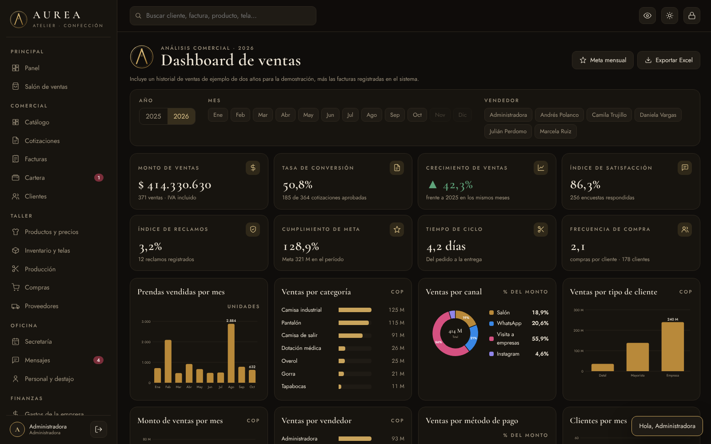
Indicadores y filtros
Cómo se usa
Entre a Análisis y luego a Dashboard de ventas.
Elija el año y, si quiere, uno o varios meses.
Toque el nombre de un vendedor para ver solo sus ventas; puede elegir varios.
Pase el dedo por las gráficas para ver los valores exactos.
Toque Meta mensual para fijar la meta de ventas.
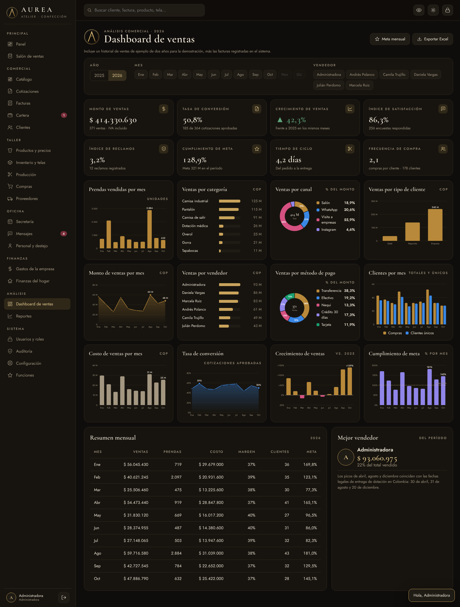
Las doce gráficas y el resumen mensual
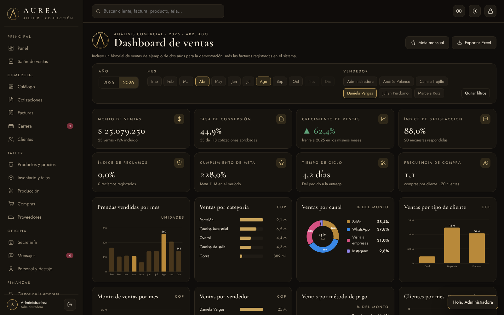
Filtrado por meses y vendedor
Funciones de este módulo
27 funciones
189
Monto de ventas del período
Total vendido con IVA según los filtros.
190
Tasa de conversión de cotizaciones
De cada 100 cotizaciones enviadas, cuántas se aprobaron.
191
Crecimiento frente al año anterior
Cuánto subieron o bajaron las ventas frente a los mismos meses del año pasado.
192
Índice de satisfacción de clientes
Calificación promedio de las encuestas, en porcentaje.
193
Índice de reclamos
Porcentaje de ventas que tuvieron un reclamo.
194
Cumplimiento de la meta de ventas
Lo vendido frente a la meta del período.
195
Tiempo de ciclo del pedido a la entrega
Días promedio desde el pedido hasta la entrega.
196
Frecuencia de compra por cliente
Cuántas veces compra en promedio cada cliente.
197
Filtro por año
Cambia todo el tablero al año elegido.
198
Filtro por uno o varios meses
Se pueden escoger meses sueltos, por ejemplo abril y agosto.
199
Filtro por vendedor
Muestra las ventas de uno o varios vendedores.
200
Prendas vendidas por mes
Unidades vendidas en cada mes.
201
Ventas por categoría
Cuánto vendió cada categoría de prenda.
202
Ventas por canal
Porcentaje vendido en salón, WhatsApp, visitas a empresas e Instagram.
203
Ventas por tipo de cliente
Ventas al detal, a mayoristas y a empresas.
204
Monto de ventas por mes
Línea con el valor vendido mes a mes.
205
Ventas por vendedor
Ranking de vendedores por valor vendido.
206
Ventas por método de pago
Porcentaje pagado por transferencia, efectivo, Nequi, crédito y tarjeta.
207
Clientes totales y únicos por mes
Compras del mes frente a clientes distintos que compraron.
208
Costo de ventas por mes
Lo que costaron las prendas vendidas cada mes.
209
Tasa de conversión por mes
La conversión de cotizaciones mes a mes.
210
Crecimiento de ventas por mes
Barras arriba o abajo de cero según cada mes frente al año anterior.
211
Cumplimiento de meta por mes
Cada mes frente a la línea de la meta del 100%.
212
Resumen mensual con margen
Tabla con ventas, prendas, costo, margen, clientes y meta de cada mes.
213
Mejor vendedor del período
Quién vendió más y qué parte del total representa.
214
Meta mensual editable
La meta de ventas se cambia cuando se quiera.
215
Exportar las ventas filtradas a Excel
Descarga el detalle de las ventas que se están viendo.
Capítulo 19
Reportes y configuración
Los reportes muestran la foto financiera del año. La configuración guarda los datos de la empresa, el IVA, los textos de los documentos y el respaldo cifrado. El sistema funciona en celular, tableta y computador, en tema oscuro o claro.
Reportes del año
Cómo se usa
En Configuración escriba el nombre, NIT, dirección y teléfono de la empresa.
Llene los datos de cotizaciones y facturas.
Cuando termine de probar, toque Empezar en limpio para borrar los datos de ejemplo.
Cada semana cree un respaldo cifrado y guárdelo en un lugar seguro.
Configuración y respaldo
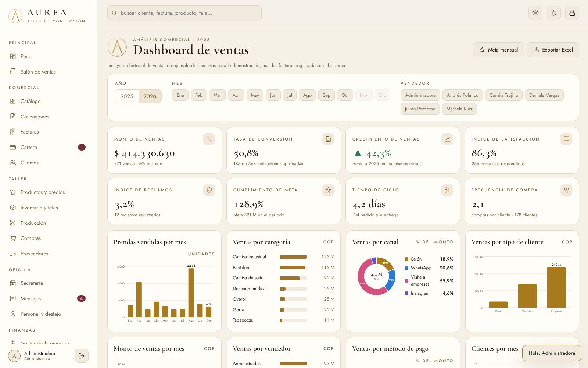
El sistema en tema claro
Funciones de este módulo
13 funciones
216
Ventas netas del año
Ventas del año sin IVA.
217
Costo de prendas vendidas
Lo que costó fabricar lo vendido.
218
Utilidad y margen
Lo que queda después de costos y gastos, y su porcentaje.
219
Ventas por categoría
Qué tipo de prenda deja más ingresos.
220
Mejores clientes
Los clientes que más han comprado.
221
Detal vs. mayor vs. empresas
Cuánto viene de cada tipo de cliente.
222
Exportar ventas a Excel
Todas las ventas con base, IVA, total y saldo para el contador.
223
Tablas con búsqueda y orden
Todas las tablas se buscan y se ordenan tocando el título de la columna.
224
Exportar cualquier tabla
Cada tabla tiene su botón para descargarla en Excel.
225
Tema oscuro y claro
El botón del sol cambia entre el tema negro y dorado y el tema claro.
226
Funciona en celular, tableta y computador
El diseño se acomoda al tamaño de la pantalla.
227
Nombre y datos de la empresa editables
El nombre, el NIT y los datos aparecen en todos los documentos.
228
Empezar en limpio o cargar ejemplo
Borra los datos de demostración o los vuelve a cargar.
Antes de empezar
Preguntas frecuentes
Respuestas claras a lo que más se pregunta antes de usar el sistema con datos reales.
¿Dónde queda guardada la información?
Hoy se guarda en el navegador del equipo donde se usa. Por eso es importante crear un respaldo cifrado cada semana. Para que la dueña y la secretaria vean lo mismo desde varios celulares y computadores, el siguiente paso es conectar el sistema a una base de datos segura en internet.
¿La factura es factura electrónica de la DIAN?
No. El sistema genera la factura comercial con consecutivo y resolución configurables, pero no la transmite a la DIAN. Para facturación electrónica validada hay que integrarlo con un proveedor tecnológico autorizado por la DIAN.
¿Las fotos de las prendas son de la empresa?
Las fotos de ejemplo fueron creadas para la demostración. Desde la ficha de cada prenda se sube la foto real tomada con el celular y reemplaza la de ejemplo.
¿Los números del dashboard son reales?
En la demostración el dashboard incluye un historial de ventas de ejemplo de dos años para que se vean las gráficas. Al tocar Empezar en limpio, muestra solo las ventas reales registradas.
¿Funciona sin internet?
Sí, una vez abierto. El probador 3D necesita conexión la primera vez que se usa; si no hay, muestra la foto con relieve.
¿Se puede cambiar el nombre y los datos de la empresa?
Sí. En Configuración se cambian el nombre, el NIT, la dirección, el teléfono, el IVA, los datos bancarios y las condiciones; aparecen en todos los documentos.
Aurea Atelier
Listo para empezar a vestir el negocio.
Primeros pasos
1. Entrar con el usuario de la administradora y cambiar las contraseñas de demostración. 2. Poner el nombre, NIT, dirección y datos bancarios de la empresa en Configuración. 3. Tocar Empezar en limpio para borrar los datos de ejemplo. 4. Cargar clientes, telas y prendas, y subir las fotos reales. 5. Crear los usuarios de la secretaria, los vendedores y el jefe de taller. 6. Crear un respaldo cifrado cada semana.